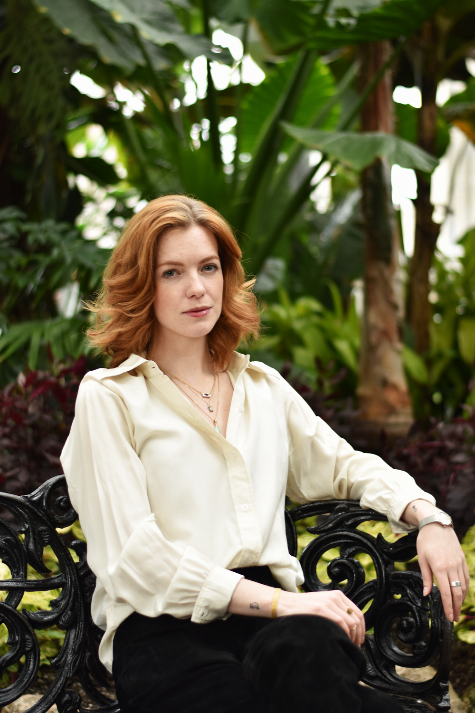

|
Born 1991 in Canada. Based in Toronto, Angel completed her M.A. Kunst- und Bildgeschichte (Art History and Visual Culture) at the Humboldt-Universität zu Berlin in 2018. Under the supervision of Dr. Inge Hinterwaldner, her Master's thesis focuses on women's performance art as the locus of historical conceptions of what constitutes "womanhood" as a material, social category, and of the speculations for the future ontology of womanhood through posthuman theory. She completed her B.A. in Art History and German Studies at the University of Guelph with a thesis supervised by Dr. Amanda Boetzkes, and studied abroad at the Universität Konstanz with a scholarship from the Baden-Württemberg Foundation in 2014. Since 2009, she has worked in public institutions and artist-run-centres in Canada and Germany, including the Art Gallery of Guelph, Ed Video Media Arts Centre, Kunstraum Kreuzberg/Bethanien, and The Power Plant. She has also curated projects in Guelph, Berlin, and Stockholm. Currently, she is the Editorial Resident at Canadian Art magazine for production of the Summer 2020 issue. Her major research interests include abjection and monstrosity, materialities of difference, cybernetics, surveillance politics, posthumanism, processes of ontological becoming, neoliberalism, and materialist feminism. Working languages: English, French, German. |
 Photo by Nadine Maher |
Young, emerging artists are negotiating their positions in a milieu where access to resources and capital is subject to precarious working conditions, changes in public funding, and dizzying relationships to institutional power. Identity politics alone are inadequate to address the material conditions of artists competing for limited resources, and contending with more stringent control over how they are allocated. These artists develop a new understanding of art world relations, which differs from an older generation of artists – that of Martha Rosler and Barbara Kruger – staking a claim in the transgressive gesture as ideologically pure. However, this generation was rebelling against models of politics and media that are now insufficient for resisting the digital platforms that shape and mediate political, individual, and institutional relations. Rather than resorting to nihilism in negotiating a critique, these artists find a degree of pleasure and humour in their aesthetic gestures of resilience and the nonlinear strategies of transgression.
This exhibition featured new work by Ivana Dizdar, Sophia Oppel, Xuan Ye, and Becca Wijshijer.
Those who live independently of authority are considered a threat to the established order. The figure of the witch, for example, is that of a woman who is dangerous for her associations with evil, that is, for her hidden knowledge, her rejection of Puritanism, her autonomy in patriarchal society. Today, some social conditions remain the same, women are still discounted and disbelieved. Taking "woman" as a social rather than biological category, we would see the tides change - to have those who have remained silent finally speak up. Instead of asking for permission to speak, it is time we spoke for ourselves. For if you do not define yourself, you will be swallowed by the definitions of others.
In this participatory project, all are invited to contribute to the compilation of a live text comprised of the voices that are often unheard. As we rewrite the narrative from the perspective of the suppressed, the text reveals sacred truths and the essential testimonials of events, history, denied by institutions of power and those who would maintain them as they are, in perpetuity.
In its first iteration, Everything Woman is Alien to Me consisted of a week-long co-working space, library, and installation, as well as a series of workshops, discussions and performances by Elle Peril, Aggie Davies, Nisha Bhakoo, Verónica Mota, Annique Delphine, and Kara Johnstad.
How could the philosophical practice of our generation look? How does our digital socialization impact the way we want to do philosophy? What kind of philosophical praxis feels right to our digitally mediated brains?
In order to answer these questions, participants of the project tutorial “Post-Internet Philosophy” were encouraged to experiment with new formats and to defy the conventions of the ivory tower. The aim was to emancipate ourselves from what our professors hold as the right way to "do" philosophy and, through this, to find our own philosophical identity within the contemporary landscape. To fill the empty notion of Post-Internet Philosophy with content, the participants completed individual projects inspired by bi-weekly discussions, workshops and work-in-progress showings.
The exhibition was accompanied by an open panel discussion with Jorinde Schulz and Babette Babich on the function of philosophy and academic practice, philosophical education in universities, and the opportunities and challenges of new philosophical formats.
| Education | |
|---|---|
| October 2015 - March 2018 | M.A. Kunst- und Bildgeschichte Humboldt-Universität zu Berlin, DE |
| April - September 2014 | Language and Literature Studies (study abroad) Universität Konstanz, DE |
| September 2009 - April 2014 | B.A. Honours Art History and German Studies University of Guelph, CA |
| Work experience and internships | |
| March 2020 - present | Editorial resident Canadian Art, Toronto, CA |
| May 2019 - present | Gallery attendant The Power Plant Contemporary Art Gallery, Toronto, CA |
| July 2019 - August 2019 | Writer-in-Residence/Programming Coordinator Roundtable Residency, Toronto, CA |
| September 2017 - December 2018 | Research assistant Studio Nick Verstand, Amsterdam, NL |
| September 2017 - December 2017 | Image editing/editing Texte zur Kunst, Berlin, DE |
| December 2016 - March 2017 | Project assistant Kunstraum Kreuzberg/Bethanien, Berlin, DE |
| March 2014 - June 2016 | Member of the Board of Directors Ed Video Media Arts Centre, Guelph, CA |
| September 2013 - April 2014 | Student Gallery Coordinator Zavitz Gallery, Guelph, CA |
| May - August 2013 | Collections Management Assistant Art Gallery of Guelph, CA |
| January 2013 - April 2014 | Gallery Assistant Art Gallery of Guelph, CA |
| September - December 2012 | Project intern Art Gallery of Guelph, CA |
| June - September 2009 | Collections Management Assistant Grimsby Public Art Gallery, CA |
| Conferences and Presentations | |
| March 15-16, 2019 | Tropes of Visibility: Performance art, womanhood, and bodies in semiosis OCAD University CADN Graduate Conference, Toronto, CA |
| November 15-17, 2018 | Utopia through smart technologies (Session chair) Architectural Humanities Research Association Annual Conference, TU Eindhoven, NL |
| March 17, 2018 | Watching and Being Watched: Self, Peer, and State Surveillance MATTER/DAMAGE exhibition at Cuore di Vetro, Berlin, DE |
| November 7-8, 2014 | “Unable to Establish a Connection”: Interpreting Empathy within the Interface Interface Critique Symposium, Universität der Künste, Berlin, DE |
| March 5, 2014 | “And so I give it back to you”: Art and surveillance with Jon Rafman and Google ARTHattack! Undergraduate Symposium, University of Guelph, CA |
| January 16-19, 2014 | You Are What You Reblog: The Digital Aesthetics of Self-Expression Canadian Association of Cultural Studies Biennial Conference, University of Waterloo, CA |
| March 9, 2012 | Postmodern Pastiche: The Internet and Dadaism ARTHattack! Undergraduate Symposium, University of Guelph, CA |
| Events/exhibitions organized | |
| April 3-7, 2019 | Shadow Protocol Curator for Ed Video Media Arts Centre, Supermarket Art Fair, Stockholm, SE |
| April 13 - 20, 2017 | Everything Woman is Alien to Me Curator, Premarts, Berlin, DE |
| May 23 - 28, 2016 | Post-Internet Philosophy (group exhibition) Co-curator/Participant, Pergamom-Palais, Humboldt-Universität zu Berlin, DE |
| March 9, 2014 | ARTHattack! Undergraduate Symposium Co-chair, University of Guelph/Art Gallery of Guelph, CA |
| November 9, 2013 | Beyond the Frame Annual Art Auction Art Gallery of Guelph, CA |
| October 21 - 24, 2013 | Source Materials (group exhibition) Curator, Zavitz Gallery, Guelph, CA |
| June 13 - July 18, 2010 | ROY G. BIV: Artist as Colourist Curator, Grimsby Public Art Gallery, CA |
hi at angelcallander.com